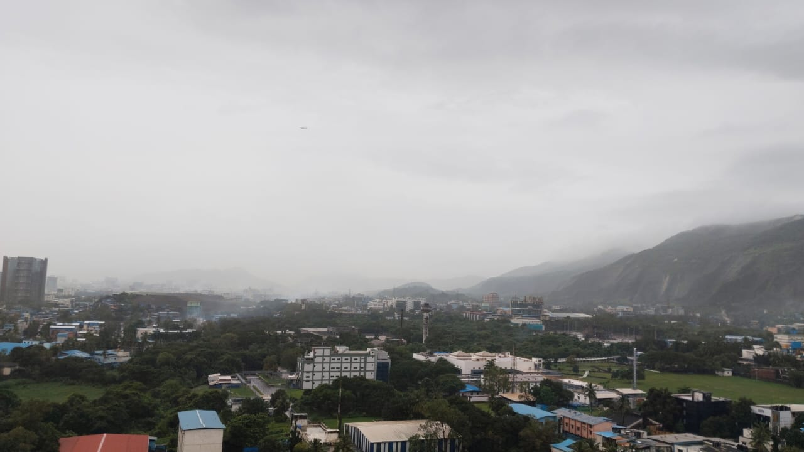
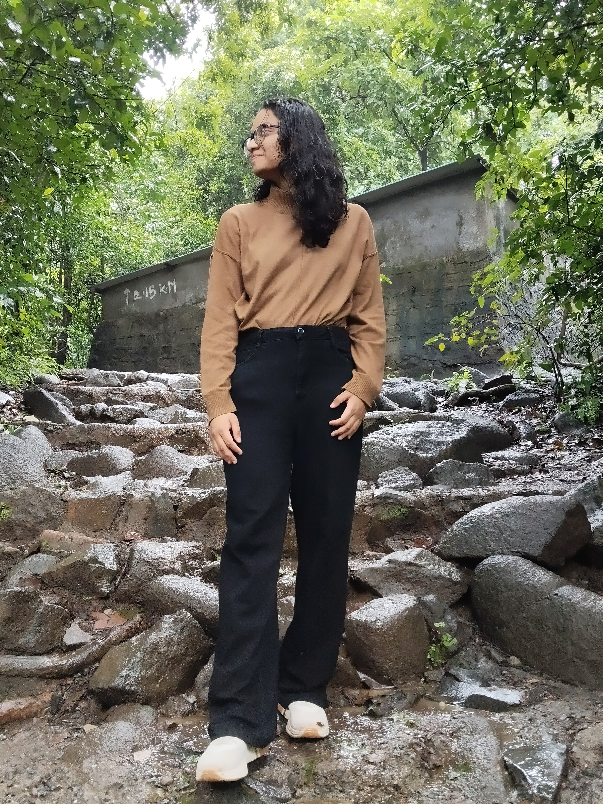

Leaving Gujarat
Leaving Gujarat with a bit of an experience and a pinch of closeness with each other.
The 8-hour bus journey seems a bit of a journey after a short flight journey. I want to sit beside you and make a full convo. Yet I am in dilemma how to ask you that. I wished you asked me the same so that I feel a little less guilty of taking too much of your space and attention.
I don't remember what happened, but we ended up sitting next to each other. Just behind us, there is Shreyash, and I am a little shy to speak freely as he is there and understands Telugu.
We haven't spoken anything so personal yet there is a bit of hesitation out of my concern. We have spoken about dating choices to different general things. I don't know how the time flew during that time.
I kind of getting to know you better and at the same time we seem similar but also different too. A part of it feels like we do the same thing in different ways.
Fourteenth Floor, Fifth Floor… Somewhere
The hotel reached and I kinda wished we should be on the same floor, and I am so curiously waiting for your floor number. Then I get to know I was in 14th and you are 5th or something (I forgot… please help me).
The same day we went for the walk, talking to each other casually, and we went to the swimming pool area. Exploring gym and steam, sauna and others.
You are busy on a call, talking to someone, while I was happy that I got a good friend and good company. But I am a lot worried inside about my relationship, and your introduction to my life is going to complicate it more.

Eight Hours of Conversations
After 8 hours of talk with you in the bus, knowing your relationship and story till then, I felt you are a brave person. I got inspired about how you are so clear about marriage and partner, in fact.
I would really say someone should have guts to do what you did. I felt like a coward after that, and I have been hanging on the things which are comfortable.
I am little worried and yet it felt wrong, also not right to break my relationship at that point of time. In midst of all the thoughts, I settled myself to not think about it and enjoy the time I have left in the ITP before the real job starts.
The View from My Window
I am very attracted to hills and mountains. I loved how the view looks from my window. I wanted to invite you, but again I wish not to create an issue or any complication for both of us.
Forwarding to the classes, you remained focused, silent and especially during group tours I tried to stick around without creating much issue to you.
For some reason, you felt cute like a little child during those sessions. You are little calm, follow the people, and nausea makes you more silent.

A Night Under the Auroras
The best thing is we had a full night out being done, and I have been speaking with you all the night, looking at the auroras.
It's just I wished you are a guy and nothing will complicate, as I wanted to spend every night in the same room speaking, playing and joyfully spending time with you.
I am so scared to convey that to Nikki, and I did convey to her in a very diplomatic way which I don't even remember now.
The Things I Couldn't Say
I know I am a coward to tell her it doesn't work between us. I know she is the best person who ever gave me such love and attention, time, caring which I don't deserve.
Long distance is not working for me, and I know I am not happy for a while. I have been gaslighting myself to survive through because Nikki doesn't deserve to be dumped.
But my cowardness cannot cost a life of a person. I can't gaslight myself forever, and she can't bear with me forever too. I just kept my thoughts aside and thinking of spending the available time with you before ITP ends.
Yoga, Running, and Little Things
I have asked you for the yoga, and I know I am not flexible at all. I really like how you taught me without judging me. I really wished we could do it every morning even after ITP, let it be yoga or running or anything together.
The Weekend Adventures
Finally the weekend came into the picture. We have planned to go for the food, bird sanctuary etc. We have gone for it, and I didn't expect you to really be so scared of hills and climbing.
I asked you if I could lend my hand, and I really hoped you don't mind me helping you. Yet I am little confused to think how could I explain it to Nikki. I kept my mind to just enjoy and be myself for that point of time.
I really had a good time helping you, and then we took a cab for the nearest railway station. You seemed really sick, and I don't know how to help. You are hesitating yourself to just keep your head on my shoulders. I told you it's okay to do it.
I really liked your presence of mind even in such a bad state, and I thought to be helpful a little.
I felt guilty to make you fall sick, and I want to help badly. I know the cab doesn't help you, and I am trying to do how much I can from my end. I am really worried at that point of time.
The whole way you are barely conscious, and I felt happy that you felt safe around me at least. I am little scared of sharing the same incident to Nikki, as it's you especially.
When Time Started Feeling Short
By all the means, I wished you wouldn't fall sick, and next day Sarika came in. I wanted to spend some time with Sarika, but for some reason… I just felt like it's just only a few days I will spend with you. I don't know why I felt that and how I felt that.
Maybe I am thinking in a way that once we are into our departments, you may not speak to me again, maybe. I meant to say, “We both might get busy eventually.”
I just went a little greedy and mixed the groups. Things went south with Sarika, and I just felt so much bad. I felt so stupid that why I am giving so much of thought to you. It's maybe I am just keeping that time bomb of not having time with you anymore at the back of my mind.
Sarika Saw Through Me
Sarika somehow always seems through me, and we went to the mall the same day. Then we started discussing about you. Sarika told me I am attracted to you, and I was gaslighting myself that I am not.
She told me that never in college I have behaved the same way towards anyone else.
I know that you are a very attractive person, and I know my boundaries and limits too. I told her I don't want to complicate my situations, and I like your presence, time and friendship. I don't want to unnecessarily hurt Nikki, and I have no courage to admit it.
She has told me to do what's right for me and Nikki. Be a little matured too and come out of the bubble which I always lived in.
Things Went South
I somehow told Nikki that we had spent an ample amount of time, also how I helped you… then spending the whole night talking to you. And she did react, though, which felt like I deserve it.
More than that, she felt so jealous of Sarika being in the picture, and I kinda quarrelled with her on it.
Things went south. I felt bad too. I don't want any of this to reach you, as I don't want you to restrict yourself from talking to me. Yet I told you bits and pieces of it though.
Navi Mumbai and Honeywell
The Mumbai is intense full part of ITP which actually made me close to you and made me realize a lot of things about myself too.
I still remember the view, auroras and night outs as symbolism to Navi Mumbai and Honeywell.